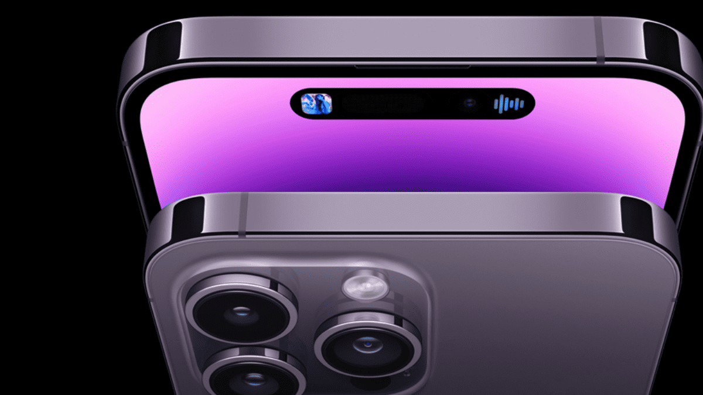
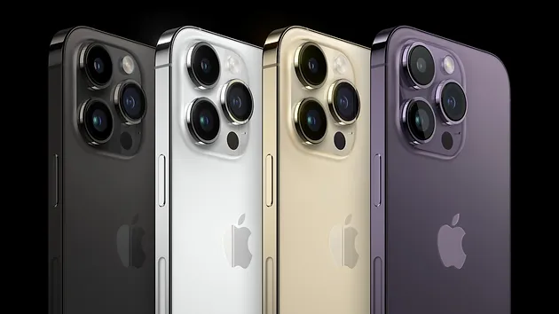

IPHONE 14 PRO BLACK
TUDO QUE VOCÊ PRECISA SABER


QUAL É A DIFREÇA ENTRE O IPHNE 14 E O IPHNHE 14 PRO?
Até onde sei, não há um iPhone 14 Pro. Na linha tradicional da Apple, geralmente há modelos básicos e modelos Pro, mas isso pode variar a cada lançamento. O iPhone 14 ainda não foi anunciado, então não posso fornecer detalhes específicos sobre suas características. Quando a Apple lançar os modelos, provavelmente haverá uma distinção entre os diferentes modelos em termos de recursos, desempenho e talvez até design.
O INTERIOR
Como minha última atualização é de janeiro de 2022, não possuo informações específicas sobre o interior do iPhone 14, já que ele ainda não foi lançado nessa época. Recomendaria verificar as notícias mais recentes da Apple ou informações oficiais da empresa para obter detalhes precisos sobre as especificações internas do iPhone 14. Geralmente, a Apple introduz melhorias no desempenho, câmera, tela e outros recursos em cada nova geração de iPhones, mas os detalhes exatos só são revelados no momento do lançamento.
O VÍDEO
Como o iPhone 14 ainda não foi lançado na minha última atualização em janeiro de 2022, não posso fornecer detalhes sobre o vídeo específico desse modelo. No entanto, com base em tendências anteriores, é possível que a Apple continue aprimorando a qualidade de vídeo em seus dispositivos, possivelmente oferecendo melhorias na resolução, estabilização de imagem e recursos adicionais de edição ou captura de vídeo. Para obter informações precisas sobre o vídeo do iPhone 14, seria necessário aguardar seu lançamento oficial ou confiar em fontes confiáveis de notícias de tecnologia que possam fornecer informações sobre vazamentos ou especulações sobre as especificações do dispositivo.